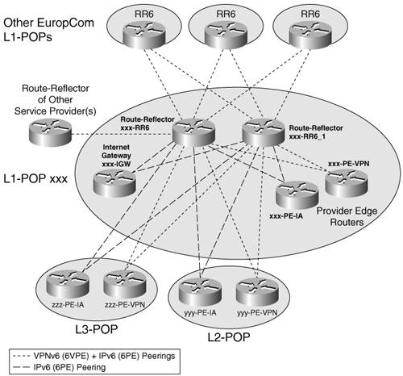

Network DesignEuropCom is an MPLS-based service provider. It took significant effort to stabilize their IPv4 infrastructure; therefore, they do not want to put it in jeopardy when starting the IPv6 service. Furthermore, operating costs for managing the core are already significant, and EuropCom does not plan to deploy any "service-specific" mechanism in the core that would drive these costs higher. Note that EuropCom considers the introduction of IPv6 as a new service, rather than a replacement for IPv4. The design team studied and tested several approaches, including the following:
The following list of goals was put in place by EuropCom to build a compelling business case for choosing the 6PE approach:
6PE will provide IPv6 connectivity over EuropCom core and enable global IPv6 IA. 6VPE will provide the equivalent service for VPN customers. In addition to these basic services, others such as DNS, IPv6 traffic monitoring, IPv6 content hosting, and VoIPv6 will also be deployed. With IPv4, PE routers are already dedicated to either VPN customers or Internet access customers: EuropCom plans to keep the same role separation with IPv6. IPv4 IA customers are the primary target for IPv6 IA, and VPNv4 customers for VPNv6 service. To optimize its business model, EuropCom plans to reuse IPv4 IA PEs and CEs for IPv6, and VPNv4 PEs for VPNv6. However, it does not exclude the cases where it might be practical to deploy dedicated IA IPv6 PEs, especially VPNv6 PEs, based on customer demand. Access DesignIn terms of access to its network resources and services, EuropCom customers can be separated in two categories:
Neither of these groups of customers requires an extensive access layer. Figure 13-5 depicts the elements of the access layer. They are independent of the overall design of the POP, and they can be found in various combinations in all EuropCom POPs. Figure 13-5. EuropCom Access LayerThe interfaces used at the access layer are summarized in Table 13-3.
Both PE and CE routers make up EuropCom access layer within a POP. They all perform access functions depending on their role in a service offering, functions listed here:
Additional layer 2 devices such as Ethernet switches or ATM switches are also part of the access layer. This section focuses on the access features enabled on these devices. Intermediate System-to-Intermediate System (IS-IS) is the interior gateway protocol (IGP) used within the access layer, between the PE and the CEs managed by EuropCom. In the case of IPv6, considering the lack of depth in the access layer, no hierarchy is necessary in the IGP design. Static routing is used in interfacing with residential and small business customers. eBGP is used between EuropCom and its service provider or large enterprise customers. Note Low-end remote CEs managed by EuropCom might run routing protocols that require less processing power, such as RIP (RIPng) or EIGRP (EIGRPv6). The EuropCom business model is highly focused on the edge features, and this is reflected in the limited depth and complexity of its access layer. Chapter 14, "Deploying IPv6 in an IP Service Provider Network," presents the case of an access service provider with an extensive rich access layer, which has more features. Its detailed description in terms of design and operation offers the reader examples of other features typical in the access layer of a service provider's network. POP DesignIn EuropCom network, Internet exchange points (IX) are also L1 POPs delivering IPv4 and IPv6 services to Enterprises and other service providers. A typical IX, shown in Figure 13-6, includes the following:
Figure 13-6. Level 1/IX POP DesignFigure 13-6 illustrates the layer 2/layer 3 structure of an IX/POP. EuropCom L1 POPs peer with other EuropCom POPs/IX as well as with other ISPs. At the same time, they also connect some local customers, whether IA customers or VPN customers. One of the characteristics of EuropCom peering with other ISPs with regard to IPv6 is that it is intended to be exclusively over MPLS. This simplifies greatly the interface design between EuropCom and other ISPs sharing the same IX, as detailed in the "Inter-AS Design" section. EuropCom interacts with other service providers in the following ways:
In terms of implications on IPv6 configurations and operation, the second bullet requires some inter-AS support in the context of IPv6, and the fourth bullet requires some CsC IPv6 support. These cases are detailed in the sections "Inter-AS Design" and "Carrier Supporting Carrier Service Design." Note that in L3 POPs, some routers can play both the role of core Provider routers (P-routers) and Provider Edge (PE) routers. Core DesignThe 6PE/6VPE approach has the advantage of minimizing the impact on the network core when enabling IPv6 traffic over it. In particular, P-routers do not need any software or hardware upgrade, or any configuration change, as long as a few caveats are understood and accepted, which revolve around ICMP (reviewed in the "ICMP Design Considerations" section). IGP Design ConsiderationsEuropCom was already running IS-IS as the core IGP prior to deploying IPv6. IS-IS enables IPv4 connectivity within the network core and between PE routers. Because IPv6 routes for both Internet access and VPN will be announced "via" IPv4 PE loopback addresses already distributed by IS-IS, no changes are required on IS-IS running in the core, and minimum impact is expected on the routing tables in core routers. For IA, EuropCom uses the next-hop-self configuration nit on the PE-PE iBGP peering, and advertises PE's own loopback addresses into IS-IS. So, on both IA PE routers and VPN PE routers, the LSP tail end belongs to the PEs. And the same LSPs are used for IPv4 and IPv6 traffic. When IPv6 is deployed, the only additional entries in core routers routing tables are IPv4 addresses configured on new PE routers. These are essentially Route Reflectors (RRs) because EuropCom design choice is to deploy dedicated RRs for 6PE/6VPE peering, while enabling IPv6 on existing PEs. With RRs, IPv4 addresses distributed via IS-IS in the core, PEs, and RRs can establish BGP peering over IPv4 and exchange IPv6 routes. Example 13-1 shows the IS-IS configuration (unchanged) in core router Bruxel-P. Example 13-1. IGP Configuration in the Core
MPLS Design ConsiderationsFor label distribution, EuropCom runs LDP over IPv4 to establish LSPs between the PE's IPv4 loopback addresses, on PEs providing Internet access as well as on PEs providing VPN access. P-routers have all their interfaces running LDP and allocating labels for these PE loopback addresses. PE routers have their P-router-facing interfaces also running LDP. Because 6PE and 6VPE are planned to reuse the very same LSPs, LDP is completely transparent to the IPv6 deployment. Note that because both 6PE and 6VPE use the two-label mechanism described in Chapter 3 (in the section "IPv6 over 6PE") and Chapter 7, respectively, Penultimate Hop Popping (PHP) can happen at the last P-router without the need to use explicit-null label to "hide" the IPv6 packet from the penultimate hop router, which is IPv6 unaware. No configuration change is therefore required for LDP on the PE-P interfaces. Example 13-2 presents the LDP configuration bits, valid for both IPv4 and IPv6 traffic. Example 13-2. LDP Configuration in the Core
Note Some service providers might be interested in using distinct LSPs for IPv4 and IPv6 traffic. Dedicated LSP head and tail end can be set up for IPv6 traffic. This is achieved by configuring BGP peering for address families IPv6 and VPNv6 between dedicated IPv4 loopback addresses, distinct from the ones used for IPv4 and VPNv4 peering. Note that, when doing so, the dedicated loopback addresses must be advertised into the core IGP, and be allocated labels by LDP. Some MPLS service provider want to control closely what addresses are being allocated labels. They use mpls ldp advertise-tag for ldp-pe-filter, where ldp-pe-filter is an access list that permits only LSP certain tail-end addresses. If different addresses are used for IPv6, these access lists may have to be modified accordingly. EuropCom has been deploying MPLS-based traffic engineering Fast ReRoute (FRR) to provide bandwidth protection upon link failure within the core, with restoration times equivalent to SONET/SDH APS and greater scalability. Because IPv6 traffic uses the very same LSPs that have been set up and protected against failures for IPv4, it will take advantage of the same level of protection at no extra cost. Note Some Internet service providers have chosen to separate strictly the IA traffic from the VPN traffic in the core. Sometimes for legacy reasons, only the VPN traffic is MPLS switched, whereas the other traffic is IP forwarded. In such a deployment model, PE routers are dedicated to either providing VPN access service or IA service. The latter routers are not MPLS enabled. Furthermore, MPLS routers, whether core or edge, are configured to allocate labels only for certain addresses, usually the one configured on VPN PE routers. Deploying IPv6 Internet access in that environment requires either dedicating PEs for IPv6 over MPLS traffic, or migrating existing Internet access PEs to MPLS prior to enabling IPv6 on them. In both cases, the PE interfaces facing the MPLS core network must also be MPLS enabled, which involves some core routers reconfiguration. These core routers may also require configuration changes to allocate labels for the new PE addresses. Enabling IPv6 in such a network scenario, not covered in this chapter, leads to bigger impact on the service provider network, including some impact on the core. QOS Design ConsiderationsQoS design is detailed in the "Quality of Service Design" section. Overall, EuropCom expects its QoS design to be fully transparent to the IPv6 deployment. All classification has been pushed to the CE. The core is overengineered, so that no QoS mechanism is implemented there. EuropCom edges use the precedence to classify traffic sent to CEs: Precedence is expected to be set the same way for IPv6 and IPv4 (by CEs), to reach zero impact on edge as well. ICMP Design ConsiderationsUntil P-routers are upgraded to a software version that provides minimum IPv6 support, they cannot send ICMPv6 messages, not even encapsulated in an MPLS stack. The issue is explained in Chapter 3, in the section "IPv6 over 6PE." Although this is acceptable for EuropCom in the initial phases, it is not sustainable on the long run. Note that this minimum support is limited to ICMPv6, and requires no IPv6 configuration. ICMP is useful in two areas: It allows troubleshooting paths using traceroute, and it is used for discovering optimal MTU throughout the network (PMTU). None of these two operational aspects is critical, as explained in section "Operating and Troubleshooting the Network." The EuropCom network has been designed and configured so that edge routers are responsible for sending back ICMP too-big messages on behalf of the core, and IP traceroute can be advantageously replaced by MPLS traceroute, which works between 6PE LSP endpoints. EuropCom has chosen to wait for the next scheduled core software upgrade to get a resolution to the challenges just discussed. Edge DesignEuropCom has decided to reuse existing PE routers when deploying IPv6, except for the RRs, which are a critical part of their IPv4 service design. Instead, it is migrating PE routers dedicated to IPv4 IA to 6PE routers (supporting both IPv4 and IPv6 Internet access) and PE routers dedicated to VPNv4 access to 6VPE routers (supporting both VPNv4 and VPNv6 access). In the initial IPv6 deployment phase, EuropCom anticipates IPv6 connectivity requests only at a few locations (London, Paris, Berlin, Milan, and Nice). It has therefore decided to make these locations IPv6 ready up front, while migrating the remaining locations based on customer demand for service. Unlike P-routers, the impact on PE routers that need to provide IPv6 connectivity is significant, both in term of node upgrade (hardware/software) and in terms of configuration. PE routers need to be upgraded with images that support IPv6, 6PE, and, for some of them, 6VPE. Depending on the platforms used on the edge, some edge devices also require hardware upgrades. Note At the time of this writing, the 6VPE feature is only available through the Cisco IOS Early Field Test program, and on certain Cisco platforms. Software upgrade is not a concern: All PEs were upgraded a while ago to a Cisco IOS version that supports IPv6 during a routine maintenance operation. So the current migration envisioned consists essentially of a configuration change. The dedicated RRs represent an addition to EuropCom infrastructure. For providing a consistent perspective of EuropCom configurations, a few routers (PE and RRs) will be referred to. Figure 13-7 provides a logical view of EuropCom network, with these few routers (at Nice, Milan, Paris, London, Berlin, and Munich) highlighted. Figure 13-7. EuropCom Network DetailsThe following naming convention is used in EuropCom network:
Note that some customers (Cisco in London, IBM in Berlin) are dual homed. PE Router Design and Implementation ConsiderationsFor the PEs migrating to provide IPv6 access (IA for 6PE and VPN access for 6VPE), the core-facing interfaces remain unchanged:
However, three significant configuration changes have to be made:
These three basic configuration tasks enable the network to provide basic IPv6 unicast transport and VPN services. They are reviewed in the sections "PE-CE Interface Design," "PE-CE Routing Design," and "PE-PE Routing Design." EuropCom has chosen to deploy dedicated RRs for 6PE and 6VPE. This is to avoid overloading existing RRs with additional configuration and BGP routes, and keep the potential influence and security concerns distinguished between IPv4 and IPv6. A full configuration setup is required for these routers that are added to the existent infrastructure. RR configuration tasks are detailed in the section "Route Reflector Design." Additional configuration may be needed for advanced services and features such as the following:
These topics are detailed in the sections "Quality of Service Design" and "Operating and Troubleshooting the Network." Before making the network changes mentioned, EuropCom has defined the IPv6 addressing plan for the deployment. This is detailed in the "Addressing" section. It covers both EuropCom's own addressing plan and the prefix-allocation scheme used for EuropCom customers. PE-CE Interface Design6PE routers are routers that migrated from IPv4 only to dual stack (IPv4 and IPv6). EuropCom does not initially plan to dedicate PEs for IPv6 traffic, but rather to enable IPv6 on interfaces previously connecting IPv4-only customers. EuropCom plans to IPv6 enable these interfaces at the pace of its customers' migration. Customers migrating to IPv6 are assigned an IPv6 prefix (from /48 up to /64 depending on their size; see the "Addressing" section for details) from the EuropCom owned 2001:6FC::/32 prefix space. For PE-CE interfaces, link-local addresses are used for IPv6 eBGP peering (see Chapter 2, "An IPv6 Refresher," for the benefits of using link-local). These link-local addresses will not derive from the EUI-64 address of the interface, because extensive BGP reconfiguration would be necessary when the hardware is replaced because of failure or to upgrade. Instead, EuropCom is telling its IPv6 customers to use link-local addresses for CE-PE peering in the form of FE80::ASN:ID, where ASN is the customer autonomous system number, and ID is an arbitrary 16-bit number defined by the autonomous system to identify a particular router. Example 13-3 is illustrates a PE-CE interface configuration on a router providing IA (Nice-PE-IA), where new configuration (IPv6) is highlighted. Example 13-3. PE-CE Interface Configuration for IA
Note that the IPv6 addresses on the CE-facing interface are link-locals, named after the EuropCom ASN (33751/0X83D7). EuropCom is also assigning a global address on the Loopback0 interface, for IPv6 operation purpose, and that should not be used for routing protocol peering. The corresponding CE routers (Nice-CE-b and Nice-CE-c) use the same addressing scheme (link-local on CE-PE interfaces). Example 13-4 illustrates Nice-CE-b configuration. Example 13-4. CE-PE Interface Configuration
A PE used for VPNv6 access, such as Nice-PE-VPN, will have an interface configuration as shown in Example 13-5. Example 13-5. PE-CE Interface Configuration for VPN Access
The configuration for Virtual Routing & Forwarding instances (VRFs) is detailed in the "VRF Design" section. Although EuropCom does not offer a managed CE service, it does own the CEs that provide access to residential users. The PE-CE interface in that case is configured exactly the same way as customers CEs, with a link-local address. PE-CE Routing DesignAs discussed in Chapter 4, "IPv6 Routing Protocols," and Chapter 7, "VPN IPv6 Architecture and Services," several IPv6 routing protocols are available for exchanging routes between the PE and the CE. EuropCom would prefer to use eBGP as much as possible, although some EuropCom customers like the simplicity of static routing, and still others, using OSPFv3 or EIGRPv6, would prefer not to have to operate another protocol such as BGP. In addition, CEs owned by EuropCom (for residential access) will run IS-IS for IPv6 toward the PE. Static Routing Design ConsiderationsSome of the smallest enterprise customers, which are single homed to EuropCom, are using an IPv6 default route to the PE, which in turn has static routes to the customer site. This configuration is limited to those sites with a small number of routes and no need for any dynamic routing protocol. These enterprises are usually getting a /56 (if they have a single subnet) up to a /48 (multiple subnets) prefix, which end up in a single static entry at the 6PE. Static routing is applicable to both VPN and non-VPN enterprise customers. The following configuration excerpt illustrates the Nice-PE-IA setup, providing static routing toward customers CE-b and CE-c, which have been assigned, respectively, 2001:6FC:1119:1::/56 and 2001:6FC:1119:2::/56. hostname Nice-PE-IA !PE#26
..
!Static routes to Customer sites: CE-b, CE-c
ipv6 route 2001:6FC:2124:2::/56 Serial2/0
ipv6 route 2001:6FC:2124:3::/56 Serial3/0The corresponding CE routers (Nice-CE-b in the following example) use a default route to point to Nice-PE-IA: hostname Nice-CE-b ! Node=61, AS=27301 Prefix=2001:6FC:2124:2::/56
..
!Static route to EuropCom
ipv6 route ::/0 Serial 0/0In the case of EuropCom's own CEs interfacing CPEs for providing residential access, static routes are also automatically added when using DHCP Prefix Delegation (DHCP-PD) (a default route ::/0 pointing to the delegating router and a route toward the Null0 interface for each delegated prefix). See details in Chapter 3. BGP Routing DesignThe majority of EuropCom IPv4 VPN customers use eBGP to exchange routes with the PE. The EuropCom network operations team is familiar with BGP, which they like for its flexibility to deal with policies on a per-VPN basis. Given the similarities between 6PE and VPNv4, and the interest in VPNv6 services, EuropCom will be promoting eBGP as the routing protocol of choice on the PE-CE interface. BGP dampening is configured to limit instability in the control plane caused by route flapping. eBGP peers over link-local addresses, with the addressing scheme defined in the "Addressing" section. Example 13-6 illustrates the BGP configuration for a 6PE router providing IPv6 IA (Nice-PE-IA). New configuration elements for IPv6 are highlighted. Example 13-6. eBGP Configuration for a PE Router Providing IPv6 IA (Nice-PE-IA)
As a general VPNv4 BGP policy, and to protect PE routers, EuropCom is limiting the number of prefixes received from a particular CE to 50. Because IPv6 customers can get large chunks of addresses (up to /48; see "Addressing" section), the limit put on each CE connection will be dramatically lower for IPv6 than for IPv4. Example 13-7 illustrates the 6VPE configuration at Nice-PE-VPN, with regard to the PE-CE eBGP peering. The maximum number of prefixes for this customer is five. New configuration elements for IPv6 are highlighted. Example 13-7. eBGP Configuration for a PE Router Providing VPNv6 Access (Nice-PE-VPN)
The node's global address (2001:6FC::27/128) is announced for the sole purpose of troubleshooting (see the "Operating and Troubleshooting the Network" section). On the customer side, the eBGP configuration for Nice-CE-Cisco is shown in Example 13-8. Example 13-8. eBGP Configuration for a CE Router
Note that 2001:6FC:1123:1::/52 is the site address for Nice-CE-Cisco. IGP Routing DesignSome EuropCom IPv4 VPN customers are using an IGP (OSPF, IS-IS, EIGRP) to connect to the PE. The same considerations for choosing the IPv4 IGP apply to IPv6. However, with Cisco IOS setups, no IGP currently supports IPv6 in a VPN context, so this alternative cannot be offered by EuropCom to its VPNv6 customers. Non-VPN enterprise customers would not want to expose their IGP outside the enterprise, so this is not an attractive alternative for them. Finally, EuropCom-owned CEs need to run an IPv6 IGP with the PE. One possibility would have been for EuropCom to use iBGP between the CE and the PE. Several drawbacks and deployment constraints led EuropCom to abandon this design:
In the end, EuropCom decided to go for IS-IS between these EuropCom CEs and the PE, as illustrated in Example 13-9. Example 13-9. Using IS-IS on the PE-CE Interface
PE-PE Routing DesignPeering between 6PEs and between 6VPEs is similar to the currently deployed VPNv4 PE-PE peering. It is using iBGP, with RRs to limit the number BGP sessions. Because EuropCom plans to deploy dedicated RRs for handling iBGP IPv6 route distribution, the iBGP sessions from each 6PE (and 6VPE) to RRs will not refer the same loopback addresses. They will, however, advertise the same next hop so that the same LSPs are used. In Examples 13-10 and 13-11, routers Nice-PE-IA and Nice-PE-VPN, the IPv4 RRs, have IPv4 addresses 100.56.56.1 and 100.57.57.1, respectively. The IPv6 RRs have addresses 100.46.46.1 and 100.47.47.1. The RR design is detailed in the section "Route Reflector Design." In the case of 6PE, the advertised routes must be explicitly labeled (unlike VPN where the labeling is implicit in the configuration, and IPv4, where BGP does not transport a label when advertising prefixes). This is achieved by using the keyword send-label when specifying the 6PE peer, as shown in Example 13-10. Example 13-10. i BGP Configuration for a PE Router Providing IPv6 IA (Nice-PE-IA)
Example 13-11 illustrates an iBGP configuration on a PE router providing VPNv6 access. Example 13-11. BGP Configuration for a PE Router Providing VPNv6 Access (Nice-PE-VPN)
Route Reflector DesignTo scale its IPv4 IA service and its VPNv4 service, EuropCom leveraged RRs in its network design. It makes a lot of sense to deploy a similar RR infrastructure for scaling IPv6 IA and VPNv6 service. For both IA and VPN services, the primary reason for deploying RRs is to improve scalability, by drastically reducing the number of BGP sessions. One RR usually peers with many iBGP speakers, preventing a full mesh of BGP sessions. Because both IA traffic and VPN traffic are MPLS switched, RRs are not part of the LSP and can potentially be located anywhere in the network. IPv4 RRs are deployed only at L1 POPs, and dedicated for peering with IA PEs and VPN PEs. PEs peer with RRs based on their geographical proximity. RRs peer together in a full-mesh topology. EuropCom plans to follow a similar design for IPv6 RRs and deploy IPv6 RRs at L1 POPs. Prefix aggregation can be done more aggressively with IPv6, which will keep the number of routes under better control. With this in mind, EuropCom does not expect the IPv6 BGP table size to get more than a few hundred entries per VPN for the next two to three years. As far as the IA, EuropCom considered the total number of allocated IPv6 prefixes worldwide (on 17/10/2005, it was 1322) and the number of BGP IPv6 routes currently deployed in IPv6 core BGP routers (700 entries in October 2005 according to http://www.cidr-report.org and evolving linearly). EuropCom expects the total number of BGP IPv6 routes to stay below 2000 entries by 2008, well below the current 150,000 IPv4 entries it is experiencing. Therefore, unlike IPv4 RRs, IPv6 RRs will be shared between IPv6 IA and IPv6 VPN. EuropCom will monitor any change in the RIRs address allocation strategy: If the RIRs agree to allocate /32 prefix to large corporations for provider-independent prefixing, BGP IPv6 tables could quickly reach tens thousands of entries. Variation in the pace of the IPv6 prefix allocation, as well as service growth and customer needs, will dictate the expansion of the RR infrastructure and the possible specialization of RRs to each of the two services. The deployment strategy for RR is different from the one for PE routers. EuropCom wants to separate IPv6 RRs from IPv4 RRs. If anything unexpected happens with IPv6, only PEs servicing IPv6 will be affected and only from the IPv6 service perspective. Because EuropCom plans to deploy IPv6 access incrementally, this strategy will dramatically lower the risk on business-critical services such as IPv4 IA and VPNv4. PEs (6PE and 6VPE) will be connected to RRs based on geographical proximity, exactly like the VPNv4 RRs. For redundancy reasons, two IPv6 RRs per L1 POP will be deployed. To provide IPv6 RR functionality, EuropCom will install new hardware in L1 POP, and connect it to the P-routers and PE routers. It will then configure BGP peering to PEs in the L1 POP, as well as PEs in L2 POP and L3 POP attached to it. Figure 13-8 illustrates the peering points between the RR in L1 POP, and the set of RR clients. Figure 13-8. EuropCom RR DesignThe following list of BGP RR clients must be configured in IPv6 RR (xxx-RR6 and xxx-RR6_1) routers at each L1 POP:
Figure 13-9. Topology of the IPv6 and VPNv6 Route ReflectionExample 13-12 illustrates the Milan-RR6 configuration, with regard to peering with Milan PEs (providing IA and VPN access) and Nice PEs (L2 POP attached to Milan). It also includes peering with Milan's Internet gateway (Milan-IGW). It does not show peering with L3 POPs, peering with RRs in other L1 POP, or peering with RRs of other service providers. Example 13-12. RR Configuration Example
VRF DesignThe EuropCom business model is to provide VPNv6 access to some of its current VPNv4 customers. The VRF design for these VPNv6 customers is intended to be rigorously identical to the one already defined, configured, and deployed for IPv4. In particular, all existing VRFs have been assigned names, route distinguisher (RD), and route target. Enabling them for IPv6 is a matter of service enhancement and service coexistence rather than IPv4-to-IPv6 transition or new deployment. All basic steps for the VRF design have already been made for the VPNv4 service:
The concept of Multiprotocol VRF (MP-VRF) was detailed in Chapter 7, and it suits perfectly EuropCom strategy. Only a fraction of the actual VPNv4 design needs to be revisited. The remaining parts are a migration task, from an IPv4 service to a dual-stack service. Out of the six steps defined above, Steps 1, 2, and 3 are handled by the migration of IPv4 VRF(s) into MP-VRF(s). VRF names, route targets, and RDs already defined for VPNv4 service apply seamlessly to VPNv6 service wherever MP-VRF is enabled. The VRF migration can be done automatically and without disrupting VPNv4 VRF operations (including forwarding) by executing the following commands: Nice-PE-VPN(config)#service internal Nice-PE-VPN(config)#vrf upgrade-cli multi-af-mode common-policies [vrf <name>] EuropCom plans to use this command, one VRF at a time (the command can do all VRF at once, but the migration will be driven by individual customer requests). Example 13-13 illustrates how the migration works in router Nice-PE-VPN. Example 13-13. Migrating IPv4 VRF to MP-VRF
When enabling a VRF for IPv6, the name and the RD remains unchanged (Cisco-Nice/21214:1, for instance). With the EuropCom design approach, the route targets also remain unchanged: IPv6 is simply "enabled" for that particular VRF, and on all interfaces that belong to it. Step 4 requires configuring the VPNv6 interaction with the backbone control plane. The interaction with the backbone control plane requires some design and configuration work and was described in the "PE-PE Routing Design" section. Step 5 is partly covered by the migration to MP-VRFs (the VRF bound to the interface that was IPv4 only became IPv4 and IPv6). The remaining part is to configure IPv6 (addressing and routing) in the interface. Step 6 does not need to be revisited because the same QoS policies apply to IPv6. The existing QoS design is expected to map onto VPNv6 and IPv6 IA traffic seamlessly. This is described in the "Quality of Service Design" section. Note With MP-VRF, an interface can only belong to one VRF, and a VRF is uniquely identified by a single name and a single RD. On a given VRF interface, IPv4 and IPv6 can be enabled together or separately, but they cannot be put in different VRFs. The enabling of each protocol is done at two levels: The protocol is enabled in the VRF definition, and then activated on a VRF interface by assigning an address (IPv4 or IPv6) to the interface. It is a VRF design choice to share a route target between IPv4 and IPv6, or to keep them distinct. EuropCom chose to keep them identical, to minimize the redesign of VRF when deploying IPv6, and to minimize operation costs. However, that does not prevent it from enabling IPv4 only on certain sites of a given VPN, in which case sites not enabled for IPv6 will not participate in the IPv6 VPN. Inter-AS DesignTo connect to other service providers at POP/IX, EuropCom has been using the Scenario C for its VPNv4 traffic, as described in RFC2547bis, in the section "Multi-AS Backbones." In Scenario C, multihop MP-eBGP redistributes VPN routes across RRs in different autonomous systems. Labeled IPv4 routes to the PEs are advertised across Autonomous System Boundary Routers (ASBRs) so that a complete LSP is set up end to end. In this scenario, ASBRs are not VPN aware; only RRs are VPN aware. For VPNv4, the following setup/configuration has been deployed:
EuropCom customers at the Nice POP are accessing resources outside the EuropCom network, via xxCom, a Tier 1 Italian MPLS service provider. xxCom shares EuropCom Internet exchange facility in Milan. To enable the service for IPv6 and VPNv6 in Nice, using inter-AS Scenario C, EuropCom needs to modify the configuration at Nice-PE-IA, Nice-PE-VPN, Milan-RR6, and Milan-ASBR routers. Note that for Milan-ASBR, the configuration upgrade decision is driven by the new Milan-RR6 (see "Route Reflector Design" section). The ASBRs remain completely IPv6 unaware, and do not need to be IPv6 capable. Figure 13-10 shows the BGP peering points required to enable IPv6 interprovider connectivity from PE routers Nice-PE-IA and Nice-PE-VPN (providing IPv6 IA and VPN access, respectively) to the xxCom network. Figure 13-10. BGP Peering Points for Enabling Inter-AS in Nice POPThe following list of additional BGP peerings is necessary to enable inter-AS (Scenario C) communication from an L2 POP such as Nice:
The BGP peering (IPv4 with label) between boundary routers (Milan-ASBR and xxCom-ASBR) was already set up for IPv4 inter-AS communication and is reused without configuration changes for IPv6 communication. Example 13-14 illustrates the additional configuration in a VPN PE (Nice-PE-VPN) required in inter-AS Scenario C to distribute the PE IPv4 address with label to xxCom. Example 13-14. Inter-AS: IPv4+Label Peering from Nice-PE-VPN to RR
The RR in Milan is configured to peer with the xxCom RR, for both address families IPv6 and VPNv6, as illustrated in Example 13-15. Example 13-15. Inter-AS: IPv6 and VPNv6 Peering from Milan-RR6 to xxCom
The RR in Milan is also peering with the ASBR (Milan-ASBR) and with each PE (Nice-PE-IA and Nice-PE-VPN) to exchange IPv4 PE addresses with label, as illustrated in Example 13-16. Example 13-16. Inter-AS: IPv4+Label Peering from Milan-RR6 to PEs and Milan-ASBR
The Milan ASBR Milan-ASBR peers with the RR (Milan-RR6) as well as with the xxCom ASBAR (xxCom-ASBR) to exchange IPv4 PE addresses with label, as illustrated in Example 13-17. Example 13-17. Inter-AS: Configuration at Milan-ASBR
In summary, to enable interprovider access to xxCom, EuropCom performed the steps listed in Table 13-4.
|